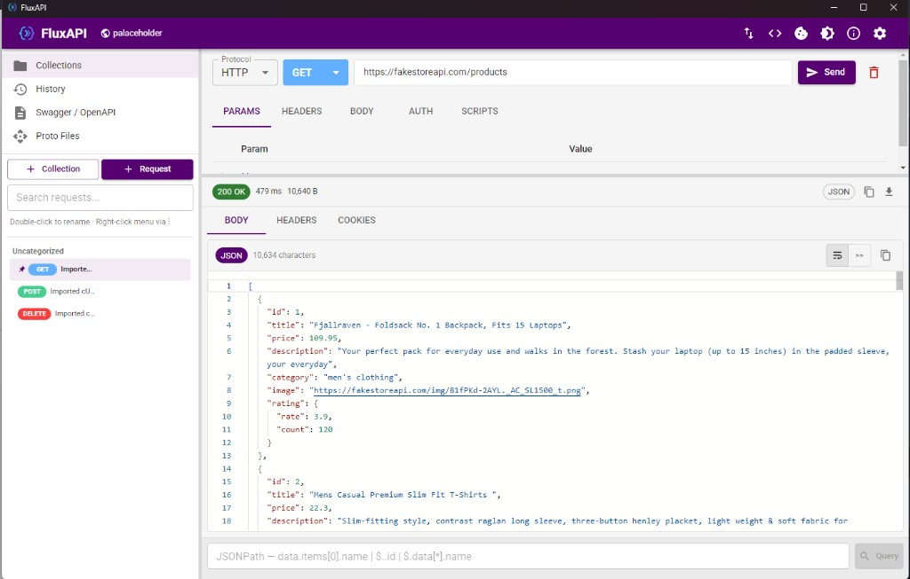
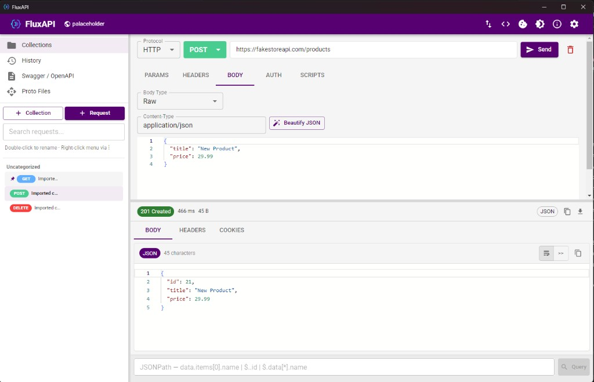
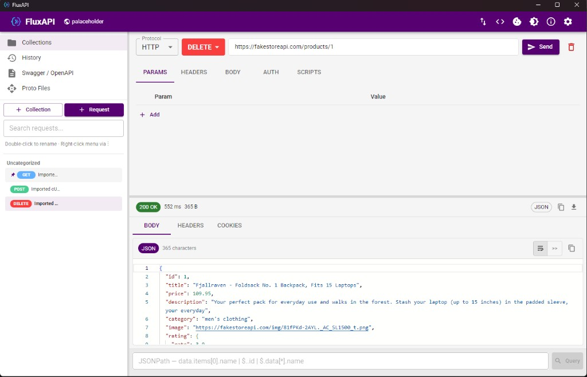
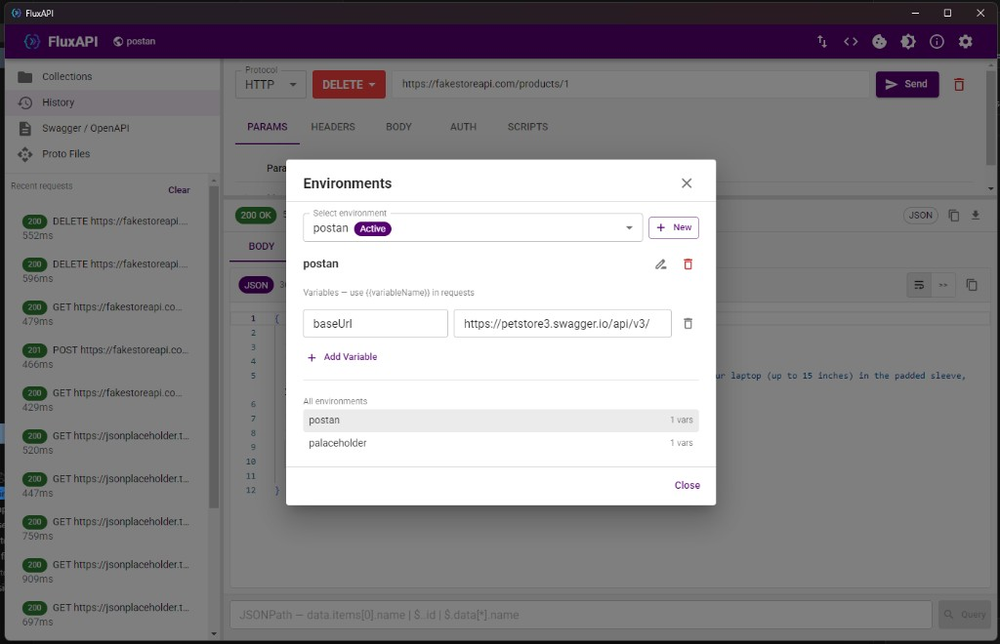

HTTP & REST
All methods, params, headers, form-data, file uploads, auth, cookies, and cURL import/export.
FluxAPI is a desktop API client for HTTP, GraphQL, WebSocket, and gRPC. Organize collections, manage environments, run scripts, and keep everything on your machine.
A focused alternative to cloud-based clients — fast, private, and fully local.
All methods, params, headers, form-data, file uploads, auth, cookies, and cURL import/export.
Query editor, variables, and schema introspection with one-click field insertion.
Connect to ws/wss endpoints, send messages, and inspect a live traffic log.
Import .proto files, pick services and methods, and call unary or streaming RPCs.
Nested folders, pinning, Postman/OpenAPI export, and sequential collection runs.
Postman-compatible pm.* scripts, environments, collection variables, and JSONPath queries.
Clean UI for building requests, inspecting responses, and managing environments.




FluxAPI runs on Windows 10/11 (x64). Click below to download the installer directly (~88 MB).
If Windows shows “Windows protected your PC”, click More info, then Run anyway. FluxAPI is open source and not code-signed yet — this warning is normal for unsigned installers.
Direct link: github.com/mortenaho/fluxapi/releases/latest/download/FluxAPI-Setup.exe